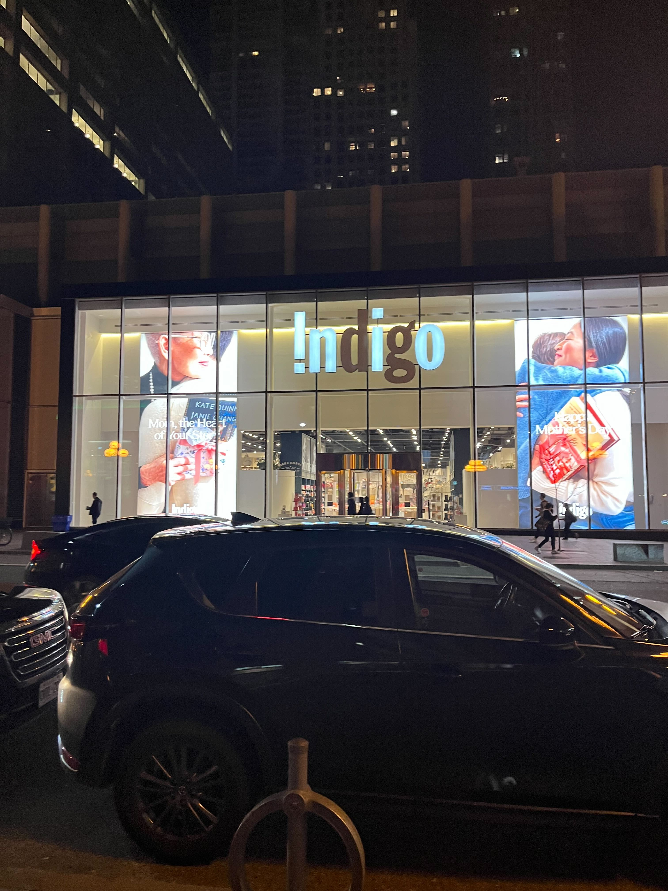

虽然Austin 挺烦的 但是实际上就是他也用了这个插件 两年前我也很喜欢这个插件 团子告诉我的 我再也不嫌他烦了
虽然Austin 挺烦的 但是实际上就是他也用了这个插件 两年前我也很喜欢这个插件 团子告诉我的 我再也不嫌他烦了
这个页面之前可能有一些不准确的描述,很狭隘偏颇的的想法观点,或者粉饰自己的地方，所以我拿走了他们，假如想看我当时的*错误*的想法，可以看history
2024/5/3
跑跑
2024/5/1
getting better
希望这次不会太晚
2024/4/31
一个不存在的日子
事情都可以有不同的解读 为什么不解读的积极一些呢
我想 我去找你 没有什么太复杂的 只是本能
好的坏的都是本能 again 我们应该积极一点
2024/4/30
现在想想那个时候就挺可悲的 她说分手了团就要去找别人了 其实大家不都早就想好了吗
可以说 我不喜欢那样的团 我喜欢是没有保留的团 傻逼才会信什么reciprocal
现在也是 （私心）
但是不管那时候说多少遍 永远没法解开的地方
应该就是不合适吧 有缘无分 我以为的 和 她以为的 应该都是work的 只是我们不work了 至少我们都是坦诚的
可悲只是我们都尽力去尝试了 背面都是些不可悲的
不过有的事情过去了就过去了 如果有一天我们没有关系了 我会祝福她 今天也许还带着一点私心 也许还是要more than 陌生人一些
也可以说 先管好自己
我觉得就是太想在一起了 去调和本来就对立的地方 也许变成两阵风两朵云就是最好了
所以也不用争论什么 更不用为了得到什么去掩饰自己 或者假装妥协
也许我们都需要更合适的人生
2024/4/29
下个月皮皮生日了 想给她写个贺卡 但是好难画出她看得懂的东西
2024/4/28
『もっとちゃんと 君をみてれば、もっとちゃんと』って
2024/4/27
最理性的地方里 很不理性的人笑着
最近感觉以前的日子也太快了 现在的日子也太慢了 是不是一种信息的尺缩
2024/4/26
有点不知道该做什么
2024/4/25
不管怎么样 肯定还会有手牵着手仰望星空的一天
近道じゃなくてボクらよかった～
2024/4/24
自己一定不能放弃自己哦！
2024/4/23
你不跟我聊天啊 最近上班越来越魔幻了 很魔幻 很魔幻
热量超标的一天 很严重的超标 走电梯里人家还给我一个鲷鱼烧 我直接吞下
2024/4/22
失眠了 头疼 sad
2024/4/21
不好意思哦 最近可能话有点多 因为我没了地址 没法给你写东西 但是我也可以叫别人转交 只是麻烦
昨天啥也没发生 不过挺好的 有点头疼
梦里还是很乱
看到明年年底会有zootopia2 其实那个时候就蛮喜欢的 攒了一段时间才一起去看
那个玩世不恭的狐狸 和 很蛮好的兔子 有段时间是不是也是我们头像
都有2了 这不得狠狠被他们收割一波
我们有2吗
2024/4/20
今天梦见去日本玩 坐车错过了 Google map 可能和我不会日语有关系
该说点啥呢 最近心情状态都不好？ 不能聒噪啊 要往自己身体里加东西
2024/4/19
做噩梦了
梦见去爷爷奶奶家回家错过了我妈给定的火车 1400多块 还被骂了 真的一切都不顺利
很久以前有次也错过飞机 但是greyhound救了我
2024/4/18
差一点错过老爹的生日 谢谢 老娘提醒～
虽然Austin 挺烦的 但是实际上就是他也用了这个插件 两年前我也很喜欢这个插件 团子告诉我的 我再也不嫌他烦了
2024/4/17
嗯做了很多梦 都撕累了 哈哈
很想皮皮 尝试把皮皮偷走吧～
实话实说 虽然不是很在意别人或者什么事情 但是有的时候 还是觉得很恶心 会不会好起来有时候也不是那么有所谓了
2024/4/16
要早睡早起哦 现在还是很困
以前不是很理解 现在我得最好准备 身体要好好保护 不能麻烦别人 可能也没有人可以给我麻烦
2024/4/15
头疼
吃了好吃的Kaldereta, 炖牛肉好吃，菲律宾菜yyds
没学习，不过锻炼了，晚上找了朋友看税表
加油呗～
2024/4/14
下了象棋 indigo 变成了inio dg哪去了

2024/4/13
买了双addidas的 gazlle bold 很喜欢
之后很多次我去店里 再也找不到moomin了
2024/4/12
梦见晚上车不开灯 穿马路很危险 五台山的道士竟然还找妹子
2024/4/11
做了个梦 梦见把逃生机会留给99 99爬一个很窄的窗户 爬出去就被打成了筛子
`
2024/4/10
格局产生的不可替代性
2024/4/9
Alliteration 头韵头晕
2024/4/8
...?
2024/4/7
慢慢明白了，还能支持着一个人的东西，竟然是纸上想要追寻的终点，所以谢谢
2024/4/6
hey lets try every one more time
2024/4/5
傻傻两个人笑的多甜
2024/4/4
try try
2024/4/3
感觉被困在梦里
2024/4/2
贪心到希望所有事情都得偿所愿
自负到坚信有压力必得志
到底要去哪儿呢
2024/4/1
有时候希望每天都是愚人节 这样就可以为所有的期望落空找到理由了
不管是幼稚到愚蠢 还是精明到可怕 至少从来没有越过那个会是不再是自己的bottom line
无论如何 还是要focus on 自己 和 现在
2024/3/31
尝试跑了一下 完全跑不动
v1 vr v2~
2024/3/30
我想支撑一个人前进的力量是什么呢 应该是梦想吧
如果只是为了生活 那就太没意思了
虽然好像基本知道自己要干嘛 但是还是要躺床上好好想想自己想干啥
2024/3/29
看看 木村拓哉 和 柴崎幸 的空中情缘
2024/3/28
天气非常smooth的一天
2024/3/27
加油加油～
这两天去湾区玩了 湾区一点都没变 还是很喜欢 我会努力回到那边的～
2024/3/24
下礼拜我们好好做人 不忘初心
2024/3/23
感觉被嘲讽了😂 不开心
2024/3/22
去了水族馆 很开心
2024/3/21
那祝自己一路平安吧～
未来也要加油哦
2024/3/20
我可能最近要去忙一阵子了
加油
2024/3/19
前两天感冒了 现在好像好一点了
2024/3/16
你退半步的动作认真的吗
2024/3/15
晚上舅舅和我聊了一下下 舅舅好像也有点感冒 我只是流感 但是心里好乱
做了很多梦很多梦 有点累
2024/3/14
感冒了 吃药的时候 很苦
我想大家都很怕苦吧 也很怕痛吧
人这么复杂 我想更了解一点 如果还是自己的话 就再勇敢得向前一些吧
2024/3/13
竟然到了这么远的地方
2024/3/12
花束のかわりにメロディーを
抱きしめるかわりにこの声を
宝矿力快治好我的流感吧
2024/3/11
有点感冒了 不过好像身体还可以 就一点点难受 休息一下就好了
注意身体吧～
2024/3/10
你一直在我梦里
我一定带你回来
2024/3/9
做了梦梦见奶奶 她好像在用一个我做的东西or 什么的 她很想我
我惊醒了 我说没必要记下来 早上不会忘的 而且很困
早上醒来有点忘了 下次得一下子起来就记下来
我得回去一趟看看她
2024/3/8
我不仅头发太长了
我现在喜欢的狗都得是毛很长的那种
2024/3/7
突然很想学习
做了晚饭 好饿
今天看到说“真正的爱是特殊性对普遍性的胜利 也是无条件对有条件的胜利”
2024/3/6
无论他多么想要倾心，盗火的人束缚在了纯灰色的无尽空间中央的台子上
2024/3/5
单位吃到了一块很好的cookie，然后又藏下了一块
最近学习计划好像不太行啊，加油加油哦
兜兜转转好像又回到了造时光机的地方，嘟嘟噜吧
我得安静点，最近有点吵，安静的disciplined小动物
2024/3/4
好吧 我的头发实在是太长了
2024/3/3
sad 感觉自己变笨了......
可能得让脑子有的时候换点东西
保持乐观 全力以赴
2024/3/2
一件我一定会做成的事情
就要坚定到不要给自己留任何借口
加油～
2024/3/1
黑森林提拉米苏水果塔 回去又睡了会 然后退房
边上botanical garden真的不错 很安静 说实话湾区不如这边 很喜欢这座城市
开了会 老板说她miss了standup 我说我也miss了 然后我们都笑了。。。 什么垃圾team 今年我要好好上班
然后就开始走路 走了一条印第安人的路线 他们走水路 所以有的路被淹掉了。。。 景色很美 点 线 圈 还滑了摔了 终于可以不用跑步了
不是我怎么自己走路老摔跤 鞋子有问题
路上 我想我们不一定有时光机 但是太空 飞船 已经来到了天气的外面
我要做一个很disciplined的人
而且一开始以为的事情 一定会变成现实的
还有一个纠结的点 不是我头发挺满意的啊 我秃了所以得留长点
2024/2/29
忘记了眼镜 折了回去
要是每件事情都能折回去就好了
把忘了说的话 做错的事情都改正 该多好
所以明天一路平安啊 之后也是
留白的地方 等长大了自然会补全
欠的东西 +蛋糕蛋糕蛋糕蛋糕......
2024/2/28
这真是一座水汽丰饶的城市 我来到了天上然后落下 发疯一般撞在每一个面上
2024/2/27
僕愛なんて まだ幼すぎて
わかったような気でいた
約束をいくつも作って簡単に手放した
现在我还是太幼稚了，想到了一些事情，有了一些新的想法
2024/2/26
Bluey～ 狗子还是很治愈的
今天收到了去年的feedback 所有都meet the bar了 还有一个exceed 前年有两个没meet 算有好好工作吧
2024/2/25
团纸娘生日快乐哦，记得那个时候她来LA玩，那时候我们都好小，哈哈
这么多年，她一直保护支持着你and我们，希望她能一直好好的身体健康～
2024/2/24
元宵佳节，团团圆圆
2024/2/23
饭店老板，竟然放misia的歌
好像一下子回到了电视剧里的那个年代
2024/2/22
嘟嘟噜
2024/2/21
心上有个人，才能活下去
2024/2/21
最美的事情，无非是已经知道不可能但还是去尝试
人永远幸运，也许有的时候甚至只是我们对于不可能的定义有局限而已
2024/2/20
不知道自己该在什么位置做什么，脑子很乱
2024/2/19
脑子好乱，dl怎么这么难，很多事情都很难
听说理想和现实之间的距离叫做行动，我要行动起来
2024/2/18
想到了以前的一些开心的事情
一起和豪哥去奥克兰吃饭 回家的时候 突然在桥上黑了发现没开灯... 豪哥咻的一下冲到前排按了双闪 那次我也吓到了真的哈哈
我和豪哥说你还挺机敏的那时候 怎么现在感冒了
还想到了一些别的
那就请我们都努力往前走吧
二つ折りの白い地図に
記す小さな決意を
正直に今伝えよう
2024/2/17
出年了 let's trytry
过去几天 我想基于灵感爆发的事情并不能团结所有人 luck更是让人埋在普通的分布里 但基于discipline可以给足安全感和幸福
所以要成为一个能闪光的人 甚至是制定规则的意见领袖 必须要无时不刻地push自己的边界去自律
2024/2/16
いつも貴方だけの場所がある
2024/2/15
有点社死...
没啥变化我，出门住酒店还是洗四个澡，也许也和以前一样还能随时随刻累的睡着
2024/2/14
梦见了某个暑假趟在家里看电视 时间很快 我要跑起来
2024/2/13
今天上班和边上一个accounting好大哥聊了4个小时天，开心～
2024/2/12
one more time, one more chance
2024/2/11
墙上原本是扇窗户，窗外阳光很好，景色很柔和，孩子们在草地上嬉闹；后来窗子变成了一幅画
2024/2/10
brand new year~
&every brand new day
2024/2/9
东京真的有那么好吗？
当然，好的得不得了。
2024/2/8
今天一定要是努力的一天！
2024/2/7
今天买了チロル20周年纪念款，有mochi，但是少了五颗，没地方说理...
很想知道很多年前我们都聊了什么
这几天好像都没咋学习，脑子很乱，不是很满意自己